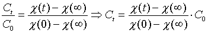
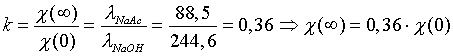
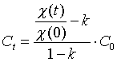
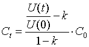

Esterhydrolyse
Formål
At bestemme reaktionsordenen for
basisk hydrolyse af ethansyreethylester.
Teori
Vi undersøger følgende reaktion:
CH3COOC2H5
+ OH- ® CH3COO- + C2H5OH
Hydroxidionerne tilsættes i form
af NaOH(aq).
Vi antager, at der ikke indstiller
sig en ligevægt, eller at ligevægten ligger så langt til
højre, at vi inden for en kortere måleperiode kan se bort fra
en evt. reaktion mod venstre.
Forsøget tilrettelægges
således, at de aktuelle koncentrationer af reaktanter hele tiden
er ens:
[OH-]t =
[CH3COOC2H5]t = Ct
I det følgende anvendes
betegnelsen Ac- for acetationen, CH3COO-.
På grund af stofbevarelse
gælder:
- [OH-]t
= Ct og [Ac-]t = C0
- Ct samt [Na+]t = C0
Konduktiviten, c(t),
i reaktionsblandingen er bestemt af de tilstedeværende ioner:
- c(t) = lOH-
. [OH-]t + lAc-
. [Ac-]t
+ lNa+ .
[Na+]t
Til tre forskellige tidspunkter er
ionernes bidrag til konduktiviteten:
| |
OH- |
Ac- |
Na+ |
| c(0) = |
lOH- . C0 |
0 |
cNa+. C0 |
| c(t) = |
lOH- . Ct |
lAc- .
(C0 - Ct) |
cNa+. C0 |
| c(oo) = |
0 |
lAc- . C0 |
cNa+. C0 |
Det er naturligt at vælge
slutkonduktiviteten c (oo ) som et nulpunkt. Så vi trækker den
fra:
c(0) - c(oo ) = (l OH- -
c Na+).C0
c(t) - c(oo ) = (l OH- -
c Na+).Ct
og kan så finde forholdet mellem
Ct og C0

Herefter benytter vi molare
konduktiviteter ved 0,001 M til at beregne:

og kan så omskrive (III) til:

Forsøgets princip
I forsøget måles konduktiviteten
som funktion af tiden ved at forbinde ledningsevnemåleren med et
voltmeter og foretage datafangst på de målte
spændingsforskelle ved hjælp af programmet Datalyse.
Konduktiviteten er proportional med spændingsforskellen, c(t) =
konstant . Ut. Derfor er

Beregning af Ct kan
udføres i Datalyses tabel eller i et regneark.
Apparatur
20 mL fuldpipetter, 250 mL
måleglas, 1000 mL målekolbe, 100 mL og 400 mL bægerglas.
Ledningsevnemåler med skriverudgang. Magnetomrører,
SF-DigitalMeter eller IMPO DMI-24 multimeter med RS232 udgang. PC
med Datalyse.
0,100M NaOH.
0,10 M Esteropløsning: Overfør
fra burette 9,7 mL ethansyreethylester til en 1000 mL målekolbe,
der i forvejen er fyldt ¾ op med demineraliseret vand. Efterfyld
til stregen. Prop og omryst grundigt.
Kemikalier
- Overfør 20,0 mL 0,100 M NaOH
til et 400 mL bægerglas. Tilsæt 230 mL demineraliseret
vand. Mål konduktiviteten af den opløsning og nedskriv
resultatet.
- Forbind den slukkede PC med
et RS232-kabel til det slukkede multimeter. Forbind
ledningsevnemålerens skriverudgang med det tilhørende
kabel til multimetret.
- Indstil multimetret til
måleområdet 2 V. Indstil ledningsevnemåleren på
område 1,5 mS/cm.
- Tænd PC’eren og indlæs
Datalyse. Tænd for ledningsevnemåleren og multimetret.
- Vælg menuen Apparat |
Vælg Apparat | Firma | Apparat | Tilslut | OK.
Nu ses Apparatets betegnelse i menulinien som et
"menupunkt".
- Vælg "apparatbetegnelse"
| Graf (t,f(t))). Indstil boksen Indstilling af
Måleparametre: Tid pr måling = 60 sekunder. Max
antal målinger = 30. Tryk OK. Nu er apparaturet klar til
måling.
- Overfør 210 mL
demineraliseret vand og 20,0 mL 0,100 M NaOH til et 400
mL bægerglas på magnetomrøreren. Anbring dyppecellen
og tænd for omrøringen.
- Overfør 20,0 mL 0,10 M
ester(aq) til et 100 mL bægerglas.
- Hæld hurtigt
esteropløsningen i natriumhydroxidopløsningen og tryk
straks på knappen Mål på skærmen.
- Tryk med jævne mellemrum på
knappen Auto på skærmen. Så kan du følge
hvorledes grafen udvikler sig.
- Når målingen er afsluttet:
Vælg menuen Vis | Vis Memo. Indskriv forsøgets
data og andre relevante oplysninger. Vælg menuen Filer
| Gem Data.
- Vælg menuen Vis | Vis
Tabel | Rediger | Marker Alt | Kopi. Nu ligger alle
målepunkter som en tabel i udklipsholderen lige til at
sætte ind i et regneark, eller du kan arbejde videre i
Datalyses eget regnearksmodul.
Behandling af data i regnearket
- Beregn C0. Indsæt
(t,U)-tabellen fra dataopsamlingen i regnearket og beregn
Ct idet du indsætter k =0,36 I formlen for Ct.
- Undersøg, evt. ved brug af Formelsamling
Kemi, hvorledes koncentrationen af en reaktant
afhænger af tiden i henholdsvis 0’te, 1’te og
2. ordens reaktioner.
- Lav tabeller i regnearket,
så du kan foretage relevante graiske afbildninger for at
finde reaktionsorden.
- Lad regnearket tegne to
grafer for hver af de tre typer tabeller. En for første
halvdel af måleserien og en for hele måleserien.
- Undersøg ved brug af lineær
regression (i Excel: Indsæt | Tendenslinie)
hvilken orden, der giver den bedste rette linie ved at
sammenligne R-kvadreret værdi fra afbildning til
afbildning.
- Bestem reaktionsordenen og
hastighedskonstanten for reaktionen.
- Overvej antagelsen, at der
ikke indstiller sig en ligevægt.